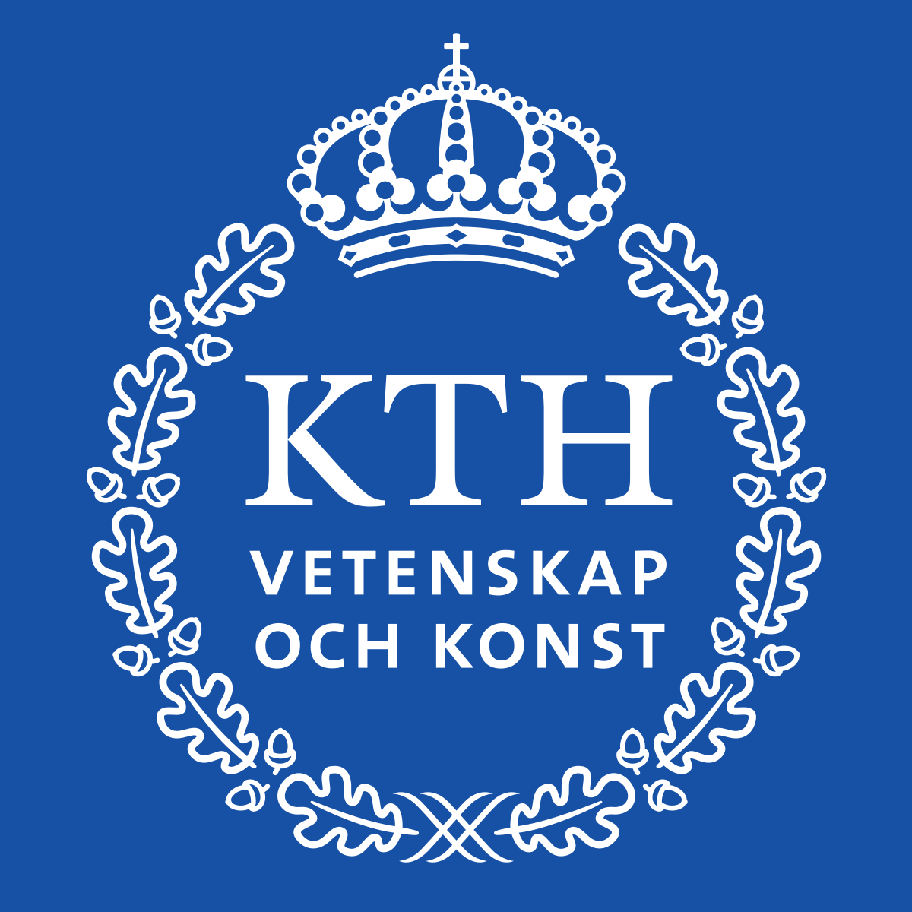

|
Ruiyu WANGI'm currently a PhD student at Robotics, Perception, and Learning (RPL) of KTH with Prof. Florian Pokorny. My research is supported by the CloudRobotics project of WASP. Before joining RPL, I was a master's student at National University of Singapore majoring in quantitative finance. My research interests fall in developing machine learning methodologies for robotic manipulation. [Curriculum Vitae] [Google Scholar] [Email] |
Publications
A Game-Theoretic Perspective of Generalization in Reinforcement Learning
Chang Yang, Ruiyu Wang, Xinrun Wang, Zhen Wang
NeurIPS 2022 Workshop DeepRL, 2022.
Education
|  | PhD: KTH Royal Institute of Technology (Sweden)
|
 |
Master: National University of Singapore (Singapore)
|
 |
Bachelor: Peking University (China)
|